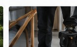
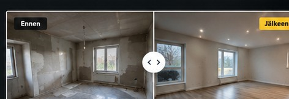

Laadukasta rakentamista – Turussa ja lähialueilla
RAKENNAMME UNELMASI TODEKSI
Luotettava rakennusalan kumppani remontteihin ja rakentamiseen. Laadulla, kokemuksella ja sovitussa aikataulussa.
✓Laadukas työnjälki
✓Sovituissa aikatauluissa
✓Luotettava kumppani
✓Selkeä hinnoittelu
Palvelumme
Monipuoliset rakennuspalvelut
Tarjoamme kokonaisvaltaiset rakennuspalvelut niin yksityisille kuin yrityksille. Pienistä remonteista suurempiin projekteihin.

Tasoitus- ja maalaustyöt
Seinien ja kattojen tasoitukset sekä sisämaalaustyöt huolellisella viimeistelyllä.
Lue lisää →


Referenssit
Toteutettuja projekteja
Laadukas työnjälki puhuu puolestaan. Tutustu toteutuksiin ja remonttien ennen/jälkeen-kuviin.

Kokemus
Vahva kokemus ja ammattitaito.
Luotettavuus
Sovitut asiat pitävät.
Asiakastyytyväisyys
Tyytyväiset asiakkaat ovat tärkeintä.
Paikallinen
Turussa ja lähialueilla.
Aloita projektisi jo tänään
Pyydä maksuton tarjous
Kerro kohteestasi, niin olemme sinuun yhteydessä.